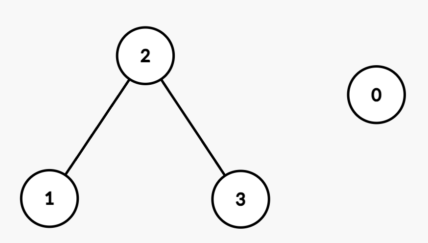

| Category | Difficulty | Likes | Dislikes |
|---|---|---|---|
| Algorithms | Medium | 104 | 4 |
array | hash-table | binary-search | union-find | graph
google
You are given an integer n representing the number of nodes in a graph, labeled from 0 to n - 1.
You are also given an integer array nums of length n sorted in non-decreasing order, and an integer maxDiff.
An undirected edge exists between nodes i and j if the absolute difference between nums[i] and nums[j] is at most maxDiff (i.e., |nums[i] - nums[j]| <= maxDiff).
You are also given a 2D integer array queries. For each queries[i] = [ui, vi], determine whether there exists a path between nodes ui and vi.
Return a boolean array answer, where answer[i] is true if there exists a path between ui and vi in the ith query and false otherwise.
Example 1:
Input: n = 2, nums = [1,3], maxDiff = 1, queries = [[0,0],[0,1]]
Output: [true,false]
Explanation:
[0,0]: Node 0 has a trivial path to itself.[0,1]: There is no edge between Node 0 and Node 1 because |nums[0] - nums[1]| = |1 - 3| = 2, which is greater than maxDiff.[true, false].Example 2:
Input: n = 4, nums = [2,5,6,8], maxDiff = 2, queries = [[0,1],[0,2],[1,3],[2,3]]
Output: [false,false,true,true]
Explanation:
The resulting graph is:

[0,1]: There is no edge between Node 0 and Node 1 because |nums[0] - nums[1]| = |2 - 5| = 3, which is greater than maxDiff.[0,2]: There is no edge between Node 0 and Node 2 because |nums[0] - nums[2]| = |2 - 6| = 4, which is greater than maxDiff.[1,3]: There is a path between Node 1 and Node 3 through Node 2 since |nums[1] - nums[2]| = |5 - 6| = 1 and |nums[2] - nums[3]| = |6 - 8| = 2, both of which are within maxDiff.[2,3]: There is an edge between Node 2 and Node 3 because |nums[2] - nums[3]| = |6 - 8| = 2, which is equal to maxDiff.[false, false, true, true].
Constraints:
1 <= n == nums.length <= 1050 <= nums[i] <= 105nums is sorted in non-decreasing order.0 <= maxDiff <= 1051 <= queries.length <= 105queries[i] == [ui, vi]0 <= ui, vi < n